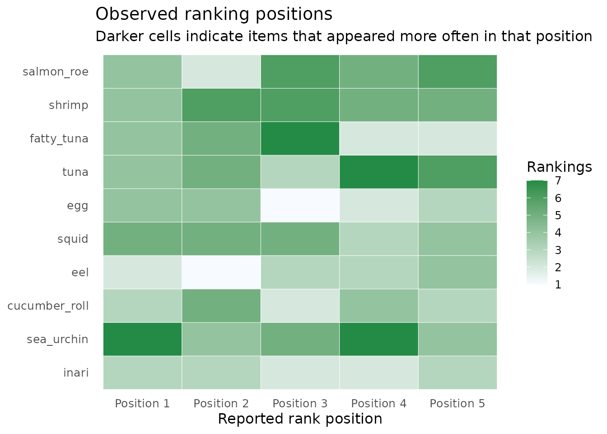
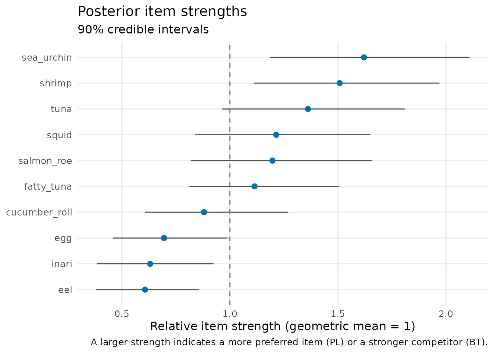
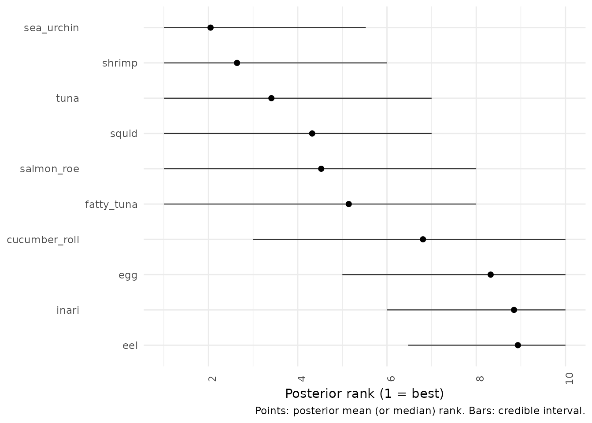
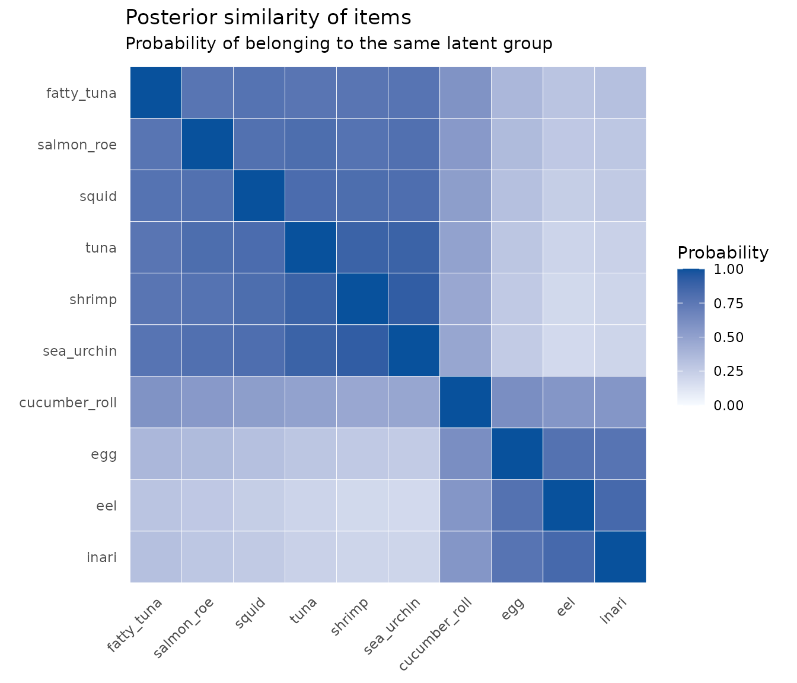
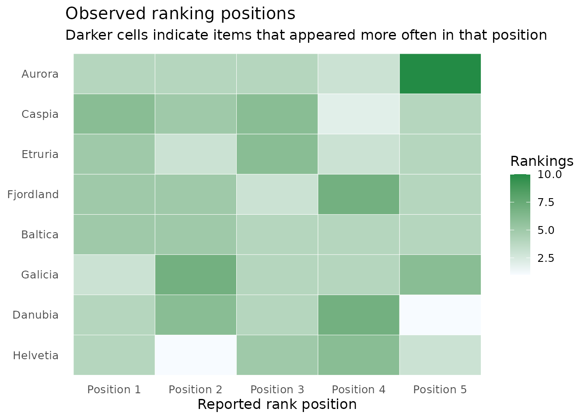
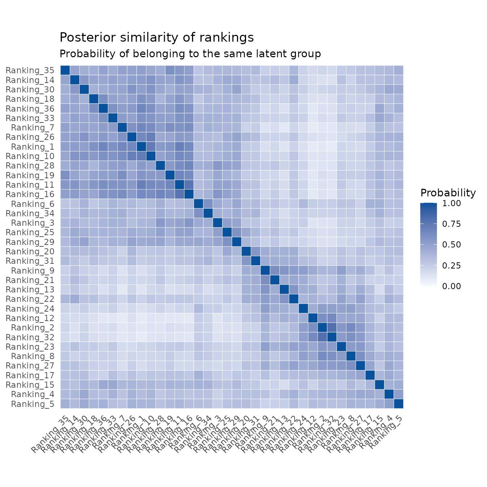
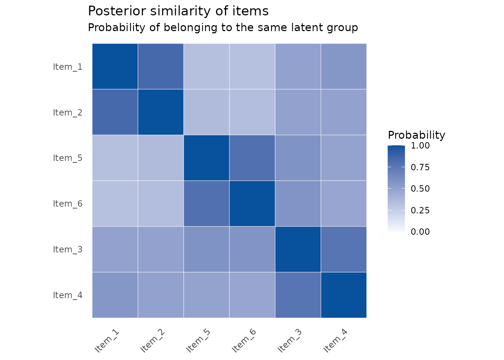
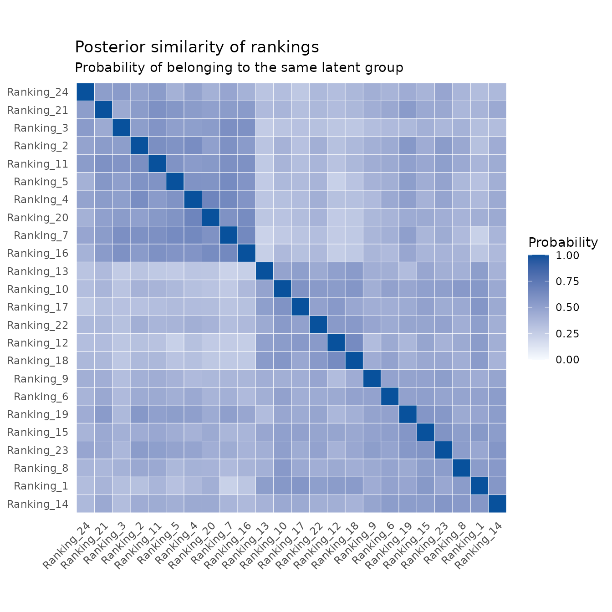
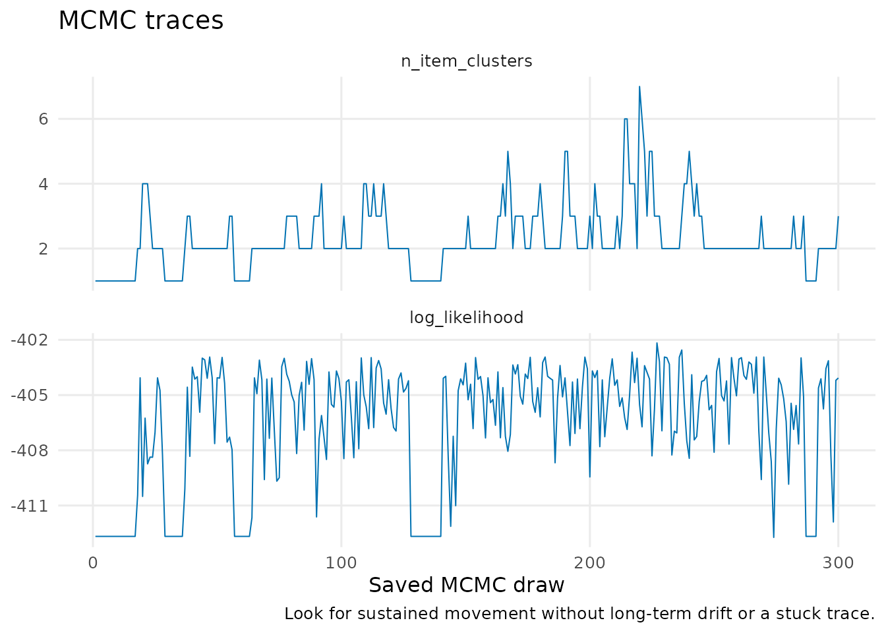

Ranking data: a beginner's guide to Plackett--Luce models
Source:vignettes/pl-ranking-models.Rmd
pl-ranking-models.RmdWhen should I use a ranking model?
Use a Plackett–Luce (PL) model when each observation is an ordered list, such as sushi A was first, sushi B was second, and sushi C was third. This is different from pairwise data, where an observation only says who won one head-to-head comparison.
The model gives every item a positive relative strength. At each position in a ranking, items with larger strengths are more likely to be selected. The strengths are relative rather than absolute: multiplying every strength by the same number would not change the predicted rankings.
1. Examine rankings before fitting
The original Sushi Preference Dataset is a well-known benchmark. Its licence does not allow redistribution, so BTSBM includes a small synthetic Sushi-inspired teaching dataset instead. You can obtain the original data from Kamishima’s data page if its terms suit your use.
sushi <- sushi_toy(n_rankings = 40, rank_length = 5, seed = 2026)
sushi
#> <btsbm_ranking_data> 40 rankings of length 5 from 10 items
sushi$rankings[1:4, ]
#> Rank_1 Rank_2 Rank_3 Rank_4 Rank_5
#> Ranking_1 9 1 5 2 3
#> Ranking_2 4 2 6 10 1
#> Ranking_3 7 5 8 3 6
#> Ranking_4 10 7 3 2 5Each row is one respondent and each column is a reported position. The next plot is a useful first look. It counts how often an item appears in each position; it is not yet a fitted model.
plot_ranking_positions(sushi)
2. Fit a simple PL model
Start with the simplest model: one strength for each sushi type. The Gamma prior keeps strengths positive. The short chain below is for illustration; use longer, multiple chains in a real analysis.
simple_pl <- fit_btsbm(
sushi,
pl_model(latent_strength = latent_strength(shape = 1, rate = 1)),
mcmc_control(iter = 600, warmup = 300, seed = 1)
)
simple_pl
#> <btsbm_fit> pl / none with 300 saved drawsThis plot is usually the main analysis result. The point is the posterior mean relative strength; the interval displays posterior uncertainty.
plot_strength_summary(simple_pl)
Rank intervals translate those strengths into an easier question: what place could each sushi item plausibly occupy? Rank 1 is best.
plot_rank_intervals(simple_pl)
3. Do some sushi types form a tier?
A PL–SBM lets items share a latent strength. It is useful when the data support broad groups, such as often favoured and rarely favoured, but do not support a precise order inside every group.
tiered_pl <- fit_btsbm(
sushi,
pl_sbm_model(
item_clustering = gnedin_prior(gnedin_hyperparameter = 0.5)
),
mcmc_control(iter = 600, warmup = 300, seed = 2)
)Do not read raw MCMC cluster labels: label 1 in one draw need not mean the same thing as label 1 in another draw. Instead, interpret the posterior similarity plot. A dark cell means the two sushi types were often placed in the same tier.
plot_posterior_similarity(tiered_pl, target = "item")
You can choose other priors for the item grouping. The names describe the decision being made:
dirichlet_process_prior(concentration = 1)
pitman_yor_prior(concentration = 1, discount = 0.2)
finite_partition(max_clusters = 4, concentration = 1)4. Could respondents have different preference profiles?
A PL mixture groups rankings, not sushi items. It answers questions such as whether there are distinct kinds of respondent preference. The Eurovision-inspired toy data is especially useful here because it has simulated jury and viewer profiles.
votes <- eurovision_toy(n_rankings = 36, rank_length = 5, seed = 3)
plot_ranking_positions(votes)
mixture_fit <- fit_btsbm(
votes,
pl_mixture_model(
ranking_clustering = dirichlet_process_prior(concentration = 1)
),
mcmc_control(iter = 400, warmup = 200, seed = 4)
)The rows and columns now refer to rankings, not acts. Dark blocks suggest respondents whose preferences were often assigned together.
plot_posterior_similarity(mixture_fit, target = "ranking")
5. Jointly group respondents and items
The PL–LBM has both kinds of grouping: it clusters ranking rows and items at the same time. It is useful for a question like which respondent profiles prefer which groups of items. pl_lbm_toy() has known simulated structure so you can see the workflow.
structured_rankings <- pl_lbm_toy(n_rankings = 24, rank_length = 4, seed = 5)
lbm_fit <- fit_btsbm(
structured_rankings,
pl_lbm_model(
ranking_clustering = finite_partition(max_clusters = 3),
item_clustering = finite_partition(max_clusters = 3)
),
mcmc_control(iter = 400, warmup = 200, seed = 6)
)
plot_posterior_similarity(lbm_fit, target = "item")
plot_posterior_similarity(lbm_fit, target = "ranking")
6. Check the MCMC run
The diagnostics table and traces should be checked before interpreting a partition. They are not a substitute for multiple chains, but they make it easy to spot a trace that is stuck or still drifting.
mcmc_diagnostics(tiered_pl)
#> quantity mean sd ess mcse
#> 1 n_item_clusters 2.263333 0.9919351 23.00151 0.2068260
#> 2 log_likelihood -406.622999 3.3293552 24.45201 0.6732911
#> autocorrelation_lag_1
#> 1 0.7339248
#> 2 0.6772591
plot_mcmc_traces(tiered_pl)
For model comparison, log_lik() returns one likelihood contribution per ranking. If the optional loo package is installed, use loo_btsbm() to perform ranking-level PSIS-LOO.
References
- Caron, F. and Doucet, A. (2012). Efficient Bayesian inference for generalized Bradley–Terry models. Journal of Computational and Graphical Statistics, 21(1), 174–196. https://doi.org/10.1080/10618600.2012.638220
- Kamishima, T. (2003). Nantonac collaborative filtering: Recommendation based on order responses. Proceedings of the Ninth ACM SIGKDD International Conference on Knowledge Discovery and Data Mining.